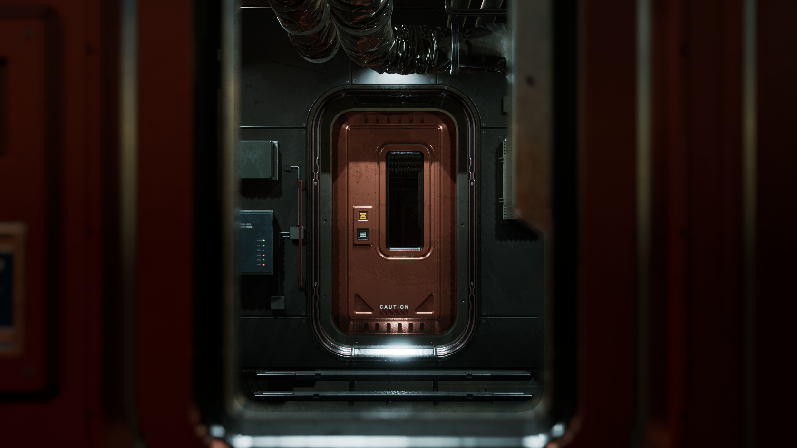
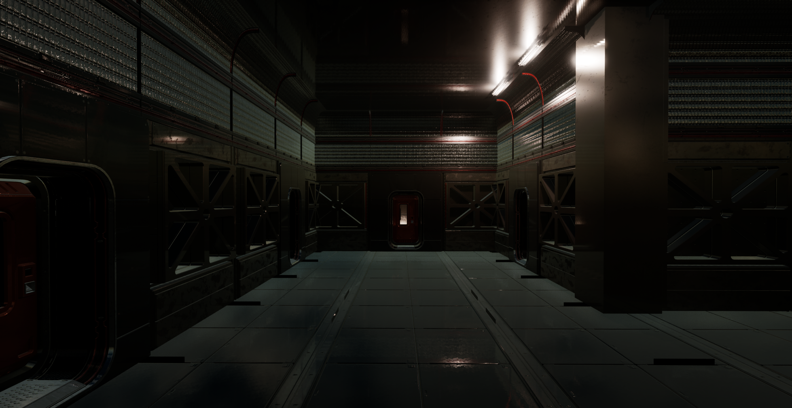
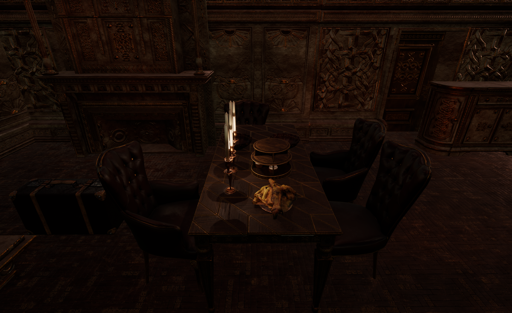
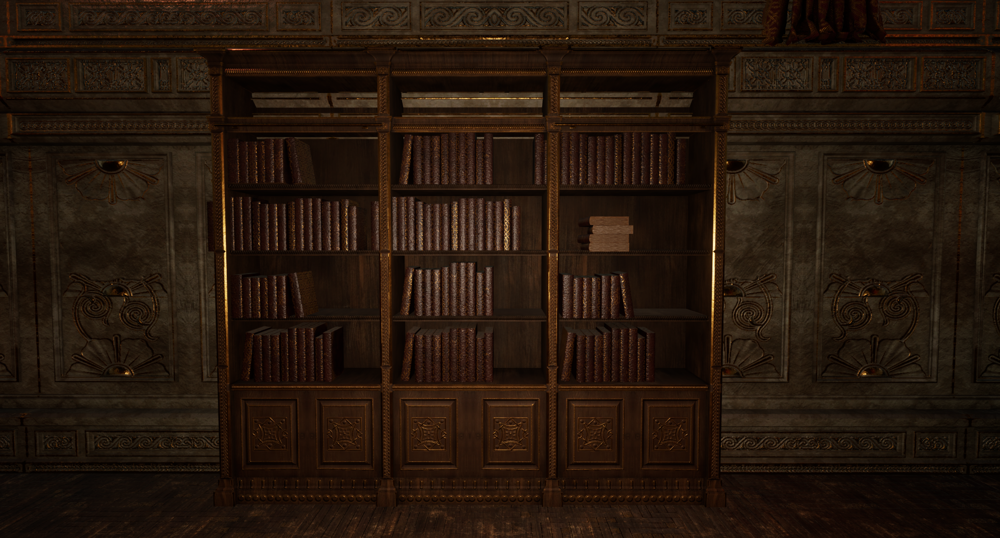
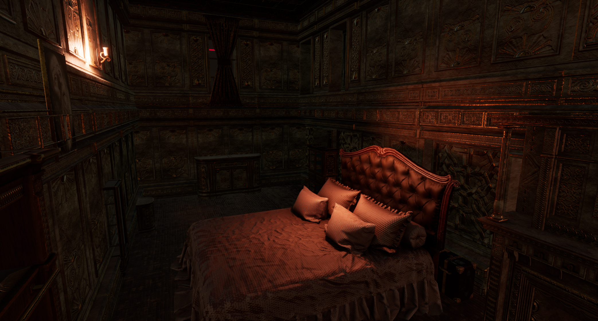
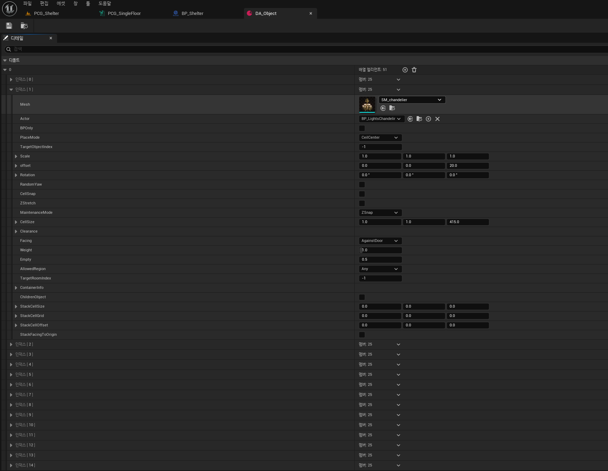
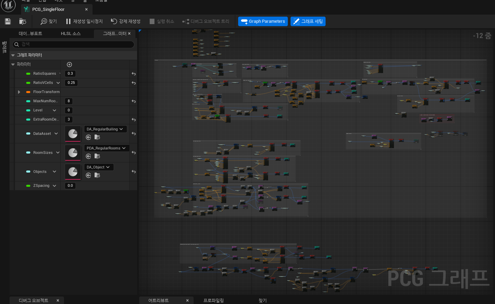
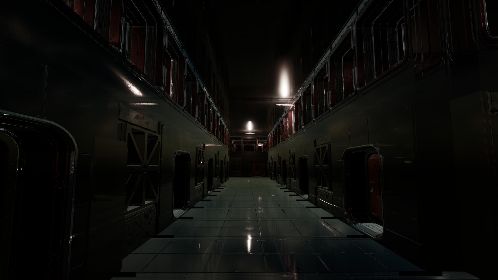

PCGLevelGenerator
OVERVIEW
이 프로젝트는 던전 파밍형 게임의 '강한 랜덤성을 가진 레벨' 생성을 위해 시작된 작업입니다. 반복적인 레벨 디자인 작업에서 벗어나, '기획자의 의도를 살리면서도 빠르게 구조를 만들 수 있으면 좋겠다'라는 실무적인 고민에서 출발했습니다. 수작업으로 거대한 맵을 채우는 대신, 규칙을 부여하면 시스템이 스스로 플레이 가능한 공간을 조립해 내는 환경을 구축해 내는 것이 목표였습니다. 아래에서 주요 특징을 확인하세요.
KEY FEATURES
1. Graph-based Dungeon Layout Generation
Grid 기반의 그래프 구조를 생성하고 MST(최소 신장 트리) 알고리즘을 활용하여, 끊어짐 없이 모든 방이 논리적으로 연결된 완성형 던전 레이아웃을 생성합니다.
2. Multi-layer Dungeon Generation
계단 생성 시스템을 도입하여 단층 구조를 넘어, 여러 층을 자연스럽게 연결하는 입체적인 다층 던전을 자동으로 생성합니다.
3. Procedural Structure Generation
방, 복도, 벽, 문 등의 필수 구조 요소들을 규칙 기반(Rule-based) 파이프라인을 통해 정교하게 생성합니다.
4. Rule-based Object Placement
Placement Rule과 확률 기반 시스템을 결합하여 다양한 장식 오브젝트를 생동감 있게 자동 배치합니다.
5. DataAsset-driven Configuration
모든 생성 파라미터를 DataAsset으로 분리하여 제어함으로써 시스템의 확장성과 재사용성을 극대화했습니다.




Why PCG?
왜 수많은 방법론 중 'UE5 PCG'였는가?
저는 던전 구조를 생성하기 위한 다양한 방법을 고민해봤습니다. 초기에는 블루프린트로 던전 구조를 생성하는 방법을 고민했었는데, PCG 플러그인을 접하고 나서 이 방식이 더 나은 방법이라고 판단했습니다. 엔진 내에서의 즉각적인 시각적 피드백이 가능했고, 여러 수학적 모델을 포함하고 있어서 자동생성에 더 강했으며, 확장성이 좋았습니다. 블루프린트로 구현하는 방법은 물론 세부적 디테일까지 구현하여 사용자에게 더 편리하고 강한 옵션을 제공할 수 있었지만, PCG 플러그인은 지속적인 업데이트와 확장으로 계속 발전하고 있었고 더 많을 기능을 제공할 예정이기 때문에 좋은 선택이라고 생각했습니다. 또 디테일한 구현과 편의성 제공은 블루프린트 방식을 추후 결합해도 되기 때문입니다. 다음 영상에서 배치된 오브젝트의 실시간 디버깅을 확인할 수 있습니다.
영상은 레이아웃 구조를 생성한 뒤 뼈대에 메시를 채워 넣는 부분입니다.
외부 툴을 오가는 파이프라인의 번거로움을 없애고, 기획자나 아트 팀이 에디터 안에서 파라미터를 조절하며 실시간으로 결과물을 눈으로 확인하는 직관적인 환경을 만들고 싶었습니다. PCG의 노드 기반 시스템은 이러한 빠른 이터레이션(Iteration)을 가능하게 했습니다. 동시에, 노드 연결만으로는 해결하기 어려운 복잡한 수학적 논리는 C++과 PCGEx를 활용해 저만의 커스텀 로직으로 뚫어냈습니다. 즉, '아트 친화적인 시각적 직관성'과 '프로그래머의 코드 제어력'이라는 두 마리 토끼를 모두 잡기 위한 최적의 선택이었습니다.
PCG 그래프 설계와 파이프라인 구성에 대한 보다 상세한 정리는 아래 가이드 문서에 정리되어 있습니다.
OBJECT PIPELINE
저는 레이아웃에 의도한 내용에 따라 동적으로 오브젝트를 채워넣기를 원했습니다. 따라서 시스템이 공간을 스스로 이해하고 채울 수 있도록 'Object Splitter 기반의 파이프라인'을 설계했습니다. 그리드를 나누고, 방향을 정하고, 범위와 위치에 따라 충돌을 감지하며, 가중치를 부여하고, 오브젝트를 생성하는 순차적인 흐름입니다.



벽과 바닥에 똑같은 오브젝트만 배치되어 인위적으로 보이는 것을 막기 위해, 위치(Floor/Wall/Ceiling/Corner 등 6가지 타입)와 방향에 따른 배치 모드를 만들고 가중치와 빈 공간 확률을 부여했습니다. 특히 'Depth 기반의 재귀(Recursive) 생성' (예: 책상 배치 → 책상 위 촛대 배치)을 통해 동일한 레이아웃 안에서도 시드값에 따라 매번 다르며, 부모와 자식관계로 이어지는 디테일이 만들어지도록 구현했습니다.
DATA-DRIVEN CONTROL
확장성을 위해서 생성 파라미터를 DataAsset으로 분리해서 에셋을 교체하는 식으로 구현했습니다.


코드를 수정할 필요 없이, 에디터 상에서 DataAsset의 Seed 값, Grid 규모, 오브젝트 생성 Depth 등을 조절하거나 원하는 에셋을 갈아 끼우기만 하면 전혀 다른 테마의 결과물을 즉각적으로 얻을 수 있습니다. 아래는 동일한 던전 구조에서 에셋만 교체하여 생성된 저택(Mansion)과 게임룸 테마입니다.
Mansion 테마

게임룸 테마
